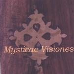

| Artist: | Kotebel |
| Title: | Mysticae Visiones |
| Label: | Musea FGBG 4402 AR |
| Length(s): | 50 minutes |
| Year(s) of release: | 2002 |
| Month of review: | [04/2002] |
| Mysticae Visiones (1-12) | 35.48 | |
| 1) | Prologue | 4.53 |
| 2) | Birth & Childhood...the Discovery | 2.27 |
| 3) | Youth...the Dream | 2.09 |
| 4) | Manhood...the Construction | 1.34 |
| 5) | Reflection | 1.47 |
| 6) | Death | 2.35 |
| 7) | Transition | 3.39 |
| 8) | Meditation | 5.04 |
| 9) | First Heaven...punishment | 3.43 |
| 10) | Second Heaven...reward | 3.20 |
| 11) | Third Heaven...the Beckoning | 1.37 |
| 12) | Epilogue | 2.54 |
| 13) | The River | 14.55 |
Birth & Childhood...The Discovery is up next. This is a slow and moody piece. The keyboards seem very much inspired by Tony Banks (fingerquick and titillating), but the addition of cello and flute make the music more classical, a bit in the vein of Karda Estra. We break right into the joyful Youth...The Dream which also features the lamenting vocals of Prieto again. Nothing much happens when we move into Manhood...The Construction. The vocals stay but wait, then the music moves into a quicker more groovy vein. The flute is rather sunny sounding and who is playing that violin....okay probably synths.
Reflection features a guitar and owes a bit to Hackett with plenty of tension and varied rhythms. Death is up next, eys we have come to the end of the time of live, but certainly not the end of the track. There is a sadness and a hope in the music here which is brought to the listener by means of a high pitched slow moving guitar line. The synths are typical of film music. The meandering keyboards at the end continue into Transition which is a rather disjoint piece rhythm wise. Plenty of flute on this one, and plenty of breaks as well. The music can be likened to the more complex Italian bands, which also often utilize flute. The drums are quite pronounced, the repetitive guitar sound has something of King Crimson. The pace goes up even more, with something akin to the Cardiacs setting in (who plays that trumpet?...okay probably synths) with the guitar sound getting heavier.
Time for a bit more quiet as we move into the cosmic sounds of Meditation where the angelic ohhhs of Prieto recur. I am not that fond of the vocal parts, the melodic material is a bit too standard, although having two vocal lines helps. The piano melody is nice and playful. The trumpwt that sounds off soon moves into sounding like a keyboard again. Plenty of meandering solo's here.
First heaven...Punishment is a percussive, somewhat angry sounding piece where the band shows off its ability to rock. Very good. Too bad it often veers from chosen paths so quickly. ELPish keyboards now take over for a plodding and later euphoric progrock part.
Second heaven...Reward is very different. Percussively played piano, subtle of inception. Melodically fine vocal melodies lead up to the meandering keyboards of Third heaven...The Beckoning ending with a majestic guitar solo. The final melody of this part is very familiar. The Epilogue is a bit like the opening: on a grand cosmic scale and reminiscent of the keyboards of Watcher Of The Skies (no mellotron though). The song ends on a somber tone.
The second track is the 15 minutes long The River, which is inspired by Hesse's Siddhartha, about the place on earth where Siddhartha finally finds meaning and purpose. The tracks opens with an exposition of all the elements of the foregoing 35 minutes: flute, Hackettish guitar, some slow percussion and even some Yanni style influences (old Yanni that is, not the overly romantic later one). A peaceful track it is, with a bit of subtle playfulness in it as well. Mellotrons ahhh softly in the back, while the leading keyboards tingle on. The guitar also sets in once in a while to lend the music a bit of bite. There is also some tension building right in the middle with a menacing piano and accidental percussion. With the Siddhartha reference also comes the influence from Indian music melody wise. This is most apparent in the part played by the flute. Later my feeling is that the band fiddles around too much. The song is very thematic, something which is also apparent through the recurrence of themes towards the end. The music is actually quite mellow here and might be compared to Tarka by Williamson and Phillips. Except for the guitar then which can be rather dominant.